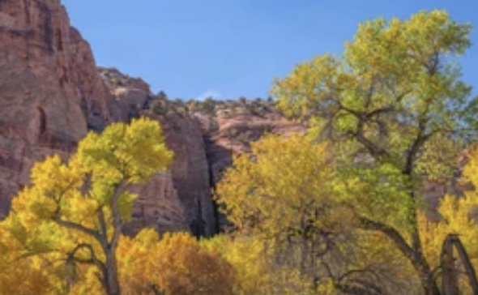

-
Birch Tree
It is a thin-leaved deciduous hardwood tree. They are a typically rather short-lived pioneer species widespread in the Northern Hemisphere, particularly in northern areas of temperate climates and in boreal climates. Birch species are generally small to medium-sized trees or shrubs, mostly of northern temperate and boreal climates. The simple leaves are alternate, singly or doubly serrate, feather-veined, petiolate and stipulate. They often appear in pairs, but these pairs are really borne on spur-like, two-leaved, lateral branchlets. The fruit is a small samara, although the wings may be obscure in some species.
-
Black Oak Tree
It is an oak in the red oak section, native to western North America. its leaves are remarkably similar in appearance to several other members of the red oak section including the red oak and the black oak found in eastern and central North America. The California black oak is a critical species for wildlife. Oaks may be the single most important genus used by wildlife for food and cover in California forests and rangelands,[and California black oak occupies more total area in California than any other hardwood species. Livestock also make heavy use of this species for food and cover. The tree is adapted to wildfire. It is protected from smaller fires by its thick bark.
-
Box Elder Tree
It is a fast-growing, short-lived tree with opposite, compound leaves. It is sometimes considered a weedy or invasive species, and has been introduced to and naturalized throughout much of the world. The yellow-green flowers are small and appear in early spring, with staminate flowers in clusters on slender pedicels and pistillate flowers on drooping racemes 10–20 cm long. Because of its leaflets' superficial similarity to those of poison ivy, box elder saplings are often mistaken for the allergenic plant. Acer negundo has been used by Native Americans for several medicinal purposes. The Cheyenne burn the wood as incense for making spiritual medicines, and during Sun Dance ceremonies.
-
Coast Redwood Tree
It is an evergreen, long-lived, monoecious tree living 1,200–2,200 years or more. This species includes the tallest living trees on Earth, reaching up to 115.5 meters in height, without the roots, and up to 8.9 m in diameter at breast height. These trees are also among the oldest living things on Earth. Coast redwoods occupy a narrow strip of land approximately 750 kilometers in length and 8–75 km in width along the Pacific coast of North America; the most southerly grove is in Monterey County, California, and the most northerly groves are in extreme southwestern Oregon.
-
Fremont Cottonwood Tree
 The tree is native to the Southwestern United States and Mexico. In the United States, the species can be found in California, Idaho, Nevada, Utah, Arizona, New Mexico, Texas, and Colorado. It is cultivated as an ornamental tree and riparian zone restoration tree. It is used in planting for: wildlife food and shelter habitats and ecological restoration; larger native plant and wildlife gardens and natural landscaping projects, windbreaks, erosion control, and shade for recreation facilities, parks, and livestock. The Cahuilla people of southern California used the tree's wood for tool making.
-
Giant Sequoia Tree
It is the sole living species in the genus Sequoiadendron, and one of three species of coniferous trees known as redwoods. Giant sequoia specimens are the most massive trees on Earth. The giant sequoia is listed as an endangered species by the IUCN, with fewer than 80,000 trees remaining. The giant sequoia regenerates by seed. A large tree may have as many as 11,000 cones. Cone production is greatest in the upper portion of the canopy. A mature giant sequoia disperses an estimated 300–400 thousand seeds annually. The winged seeds may fly as far as 180 m from the parent tree.
-
Joshua Tree
It is native to the arid Southwestern United States, specifically California, Arizona, Utah, and Nevada, and to northwestern Mexico.It is confined mostly to the Mojave Desert between 400 and 1,800 m elevation. The name "Joshua tree" is commonly said to have been given by a group of Mormon settlers crossing the Mojave Desert in the mid-19th century: The tree's role in guiding them through the desert combined with its unique shape reminded them of a biblical story in which Joshua keeps his hands reached out for an extended period of time to enable the Israelites in their conquest of Canaan.
-
Monterey Cypress
It is found naturally only on the Central Coast of California. The natural distributional range of the species during modern times is confined to two small relict populations near Carmel, California, at Cypress Point in Pebble Beach and at Point Lobos. Because of the large trunk size some trees develop, people have assumed that some trees may be up to 2,000 years old. However, the longest-lived report based on physical evidence is only 284 years old. Monterey cypress has been widely cultivated away from its native range, both elsewhere along the California coast, and in other areas with similar cool summer, mild winter oceanic climates.
-
Mountain Hamlock Tree
It is native to the west coast of North America. It is a large evergreen conifer growing up to 20 to 40 metres, with exceptional specimens as tall as 59 m tall. The crown is a neat, slender, conic shape in young trees with a tilted or drooping lead shoot, becoming cylindric in older trees. Mountain hemlock is usually found on cold, snowy subalpine sites where it grows slowly, sometimes attaining more than 800 years in age. It will grow on most landforms, but individuals typically develop best in mixed stands of forest on sheltered slopes or in draws.Mountain hemlock is adapted to sites with long-lasting snowpacks.
-
Pacific Madrone Tree
Pacific madrone, commonly madrona in the United States and arbutus in Canada, is a species of broadleaf evergreen tree in the family Ericaceae, native to the western coastal areas of North America, from British Columbia to California. Its waxy evergreen foliage, contorted growth habit, and distinctive flaky bark make it a striking sight in the coastal cliffs and hills where it is abundant.
-
Palm Tree
Palms are among the best known and most extensively cultivated plant families. They have been important to humans throughout much of history. Many common products and foods are derived from palms. In contemporary times, palms are also widely used in landscaping, making the plants economically important.Most palms are native to tropical and subtropical climates.
-
Ponderosa Pine Tree
Pinus ponderosa is a large evergreen pine tree. The bark helps to distinguish it from other species. Mature to over-mature individuals have yellow to orange-red bark in broad to very broad plates with black crevices. The egg-shaped cones are purple when first chewed off by squirrels, but become more brown and spherical as they dry. Like most western pines, the ponderosa generally is associated with mountainous topography.
-
Sycamore Tree
An American sycamore tree can often be easily distinguished from other trees by its mottled bark which flakes off in large irregular masses, leaving the surface mottled and gray, greenish-white and brown.
-
Vine Maple Tree
It most commonly grows as a large shrub growing to around 5 to 8 metres tall, but it will occasionally form a small to medium-sized tree, exceptionally to 18 m tall. The shoots are slender and hairless.
-
Willow Tree
Willows all have abundant watery bark sap, which is heavily charged with salicylic acid, soft, usually pliant, tough wood, slender branches, and large, fibrous, often stoloniferous roots.